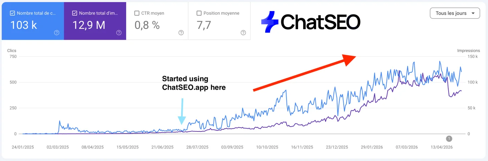
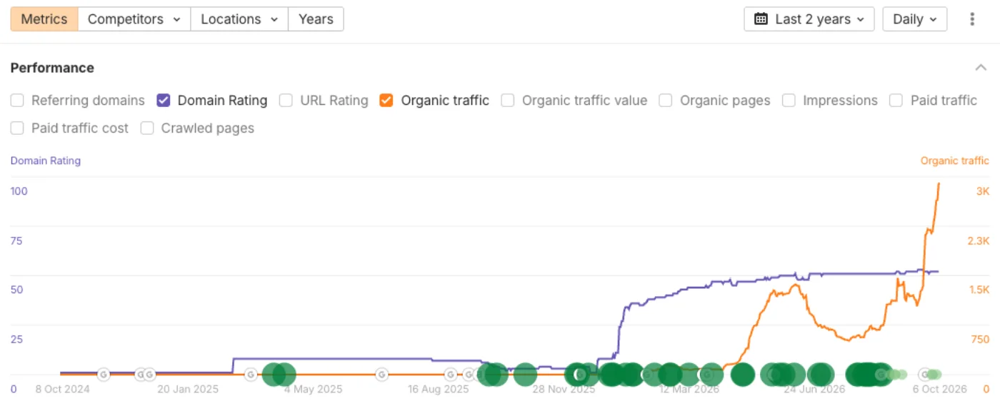
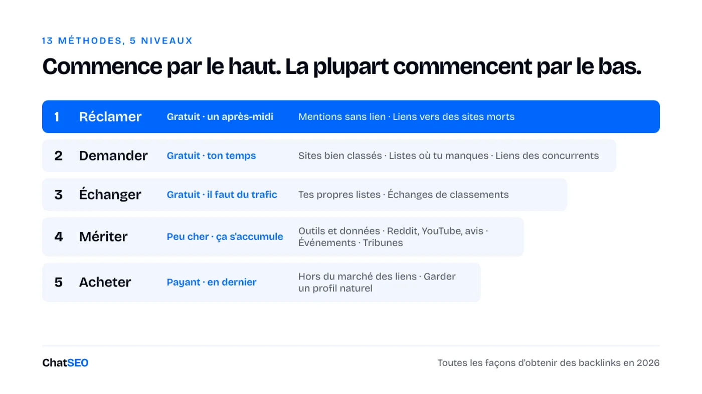
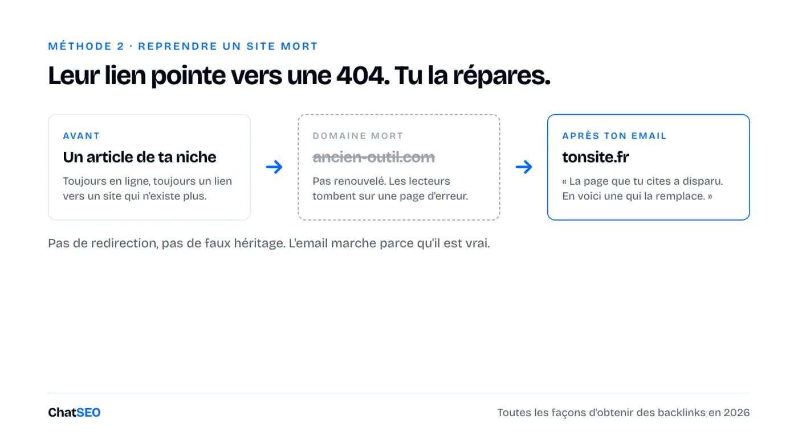
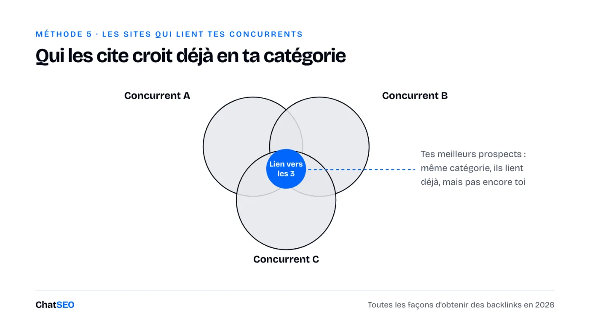
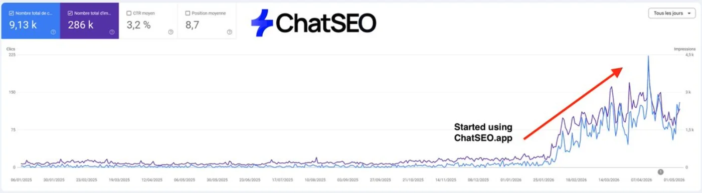
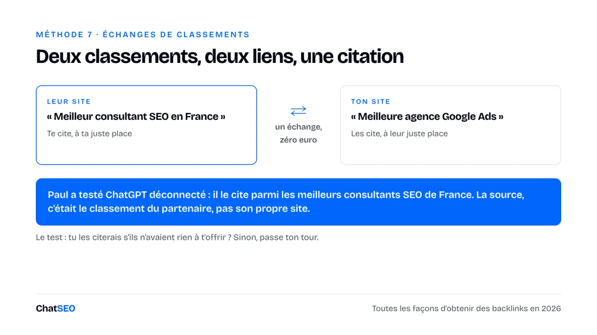
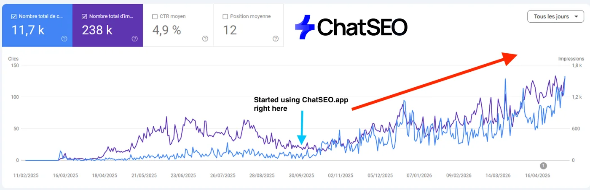
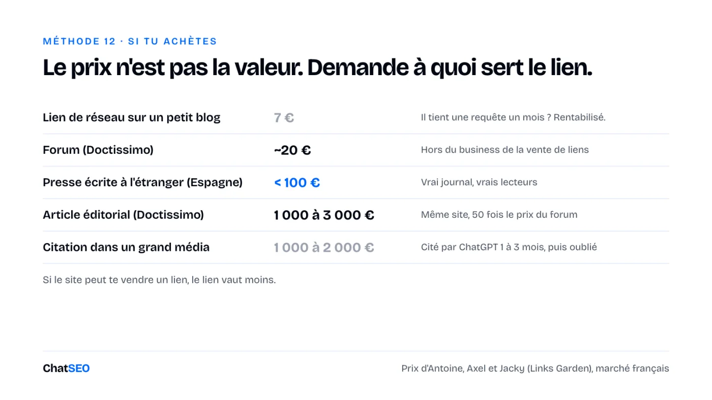

Playbooks ChatSEO / Gratuit, rien n'est verrouillé
En bref

Tu veux des backlinks pour ton business, mais chaque email « est-ce que je peux écrire sur ton blog » reste sans réponse, les liens qu'on peut acheter sont sur les mêmes 40 sites que ceux de tes concurrents, et tu ne sais pas lesquels valent quelque chose : ce playbook est pour toi.
On fait grandir le trafic organique de ChatSEO avec un seul outil : ChatSEO. Voilà où ça nous a menés.

La plupart des méthodes ci-dessous ne viennent pas de nous. Elles viennent de gens dont le métier est de faire des liens, et ils sont cités là où la méthode ou le chiffre est le leur :
Voici toutes les façons dont un fondateur peut obtenir des backlinks aujourd'hui. 13 méthodes, en cinq niveaux, de celles qui ne coûtent rien à celles qui coûtent le plus.

Garde cette page. Tu vas y revenir.
→ Commence par le haut. Les liens les moins chers sont en général ceux que personne ne peut te vendre.
Gratuit, un après-midi. Le lien le plus facile à obtenir, c'est celui que quelqu'un avait déjà l'intention de te donner.
Tu ne demandes pas un service. Tu corriges un oubli.
Quelqu'un a écrit ton nom sans mettre de lien. Tu lui écris et tu demandes. Où elles se cachent :
Le taux d'acceptation est élevé, parce que la personne a déjà décidé que tu méritais qu'on parle de toi.
On trouve les nôtres avec un seul prompt dans ChatSEO. Il te renvoie les opportunités pour ton domaine et ce qu'il faut faire pour chacune.
J'aimerais trouver des backlinks gratuits. Dis-moi ce que je dois faire.
Ensuite, envoie ça. Court, précis, et ça leur mâche le travail :
Objet : Merci d'avoir cité [Marque] dans « [titre de l'article] » Bonjour [prénom], Je viens de tomber sur ton article sur [sujet]. Merci d'y avoir inclus [Marque]. Un petit détail : la mention n'a pas de lien. Les lecteurs qui veulent essayer arriveraient sur la bonne page ici : [URL] Aucun souci dans tous les cas, et encore merci. [Ton nom]
Une méthode manuelle pour en trouver plus : cherche sur Google "ta marque" -site:tondomaine.com, puis ouvre chaque résultat qui n'est pas déjà un lien que tu as. Les pages « les outils qu'on utilise » de tes clients sont le oui le plus facile de tous.
Des sites meurent. Des domaines expirent. Les articles qui faisaient un lien vers eux restent en ligne, et pointent vers rien.

Leur page envoie aujourd'hui leurs lecteurs vers une 404. Tu leur proposes de la réparer. C'est pour ça que ça marche. Axel a découvert celle-là en étant de l'autre côté.
Objet : Lien cassé dans « [titre de l'article] » Bonjour [prénom], Ton article sur [sujet] fait un lien vers [site mort] dans la partie sur [partie]. Ce site n'existe plus : le lien ouvre maintenant une page d'erreur. Si tu veux un remplacement, on traite le même sujet ici : [URL] Dans tous les cas, ça vaut le coup de le corriger pour tes lecteurs. [Ton nom]
La ligne à ne pas franchir. Ne redirige pas le domaine mort et ne fais pas croire qu'il était à toi. La version propre marche parce que l'email dit vrai.
Gratuit, ton temps. Il existe toute une catégorie de liens qu'aucune plateforme ne peut atteindre. Presque personne ne les demande.
La méthode est si simple qu'elle a l'air de ne pas pouvoir marcher.
Pour chacune de ces requêtes : [requête 1], [requête 2], [requête 3], montre-moi qui ranke dans le top 20 de Google aujourd'hui. Garde uniquement les sites indépendants (pas de marketplaces, pas de géants, pas de concurrents directs), et donne-moi un seul tableau : requête, position, site, URL de la page. N'invente jamais un classement.
J'ai aimé ton article sur [sujet]. On en a un qui le complète : [URL]. Tu accepterais de faire un lien vers lui ?
Axel a obtenu des liens comme ça auprès de photographes, de commerces locaux, d'une mairie et du site du département des Yvelines. Aucun n'est à vendre. Ni à 50 €, ni à 5 000 €. C'est justement pour ça que le lien vaut quelque chose.
La règle qui garde ta boîte mail en vie. Axel laisse Claude Code envoyer depuis son Gmail, plafonné à 10 emails par heure, uniquement aux heures de bureau. 500 emails partent sur trois jours au lieu d'un après-midi.
Trouve les comparatifs qui rankent sur ta catégorie. Meilleurs outils, outils gratuits, alternatives au leader. Si tu y as ta place et que tu n'y es pas, défends ton dossier.
Filtre avant d'envoyer, sinon ça devient du spam :
Le troisième point est le plus important. L'auteur a déjà décidé que ta catégorie avait sa place dans l'article.
Trouve les articles « meilleur [catégorie] », « [catégorie] gratuit » et « alternatives à [leader] » qui rankent dans le top 20 de Google aujourd'hui. Pour chacun, dis-moi lesquels de mes concurrents il cite et si ma marque y figure. Donne-moi un seul tableau : requête, position, URL de l'article, concurrents cités, est-ce que j'y suis. N'invente jamais un classement ni une présence dans une liste.
Le message qui marche pointe un manque au lieu de demander un service :
Ta liste couvre bien [ce qu'elle couvre]. Aucun des [N] outils ne fait [ce que fait le tien]. Voici un compte gratuit, sans carte. Juge par toi-même, et si ça n'a pas sa place dans l'article, ignore cet email.
Le pire résultat, c'est une mention sans lien. Pas une perte : ces comparatifs sont ce que ChatGPT lit quand quelqu'un lui demande quel outil utiliser.
Quelqu'un qui fait un lien vers trois de tes concurrents pense déjà que ta catégorie mérite un lien.

On fait ça avec un seul prompt dans ChatSEO :
Trouve mes 3 meilleurs concurrents à mon niveau (pas les géants du secteur). Analyse leurs backlinks, puis trouve les emails de contact des personnes qui font un lien vers eux. Donne-moi un seul tableau : site, page qui fait le lien, concurrent cité, email de contact. N'invente jamais un email.
Il écarte Ahrefs et Semrush comme « cibles de liens pas réalistes », choisit des concurrents de ta taille, et te renvoie les emails. Ensuite, le message s'écrit tout seul :
Objet : [Titre de leur page] Bonjour [prénom], Tu fais un lien vers [concurrent] dans ton article sur [sujet]. Bon choix. On fait [ce que tu fais différemment] pour [ta cible]. Si tu mets la page à jour un jour, ça vaudrait peut-être une mention à côté d'eux : [URL] [Ton nom]
Les méthodes 1 à 5, c'est de la prospection. Fais-les tourner comme une seule routine :
Bonjour [prénom], je remonte ce message au cas où il serait passé à la trappe. La page est ici si ça peut servir : [URL]
Bonjour [prénom], dernier message de ma part là-dessus. Si ce n'est pas pour [leur site], aucun problème. Merci de m'avoir lu.
Lis toutes les réponses à ma prospection de liens des dernières 24 heures. Classe-les en : oui, question, demande de prix, non, absent. Pour chaque oui, question et demande de prix, rédige une réponse courte avec ma façon d'écrire et montre-la-moi avant tout envoi. N'envoie jamais rien sans mon accord, et ne promets jamais un paiement ou un lien retour que je n'ai pas validé.
La règle de Paul : cinq emails par jour, tous les jours. La plupart des deals de liens meurent parce que le oui est resté une semaine sans réponse.

Gratuit, il faut du trafic. Une fois que tu as des pages qui rankent, tu arrêtes de demander. Ce sont les autres qui viennent à toi.
Écris les comparatifs toi-même. Les meilleurs outils de ta catégorie. Les alternatives au leader que tout le monde cherche.
Inclus tes concurrents honnêtement. Classe-toi là où tu le mérites, ce qui n'est en général pas la première place.
Au début, ils ne font rien. Puis quelques-uns commencent à ranker, et la dynamique s'inverse. Tu as une page avec du trafic dans laquelle d'autres veulent apparaître.
Liste les requêtes « meilleur [catégorie] », « [catégorie] pour [cible] » et « alternatives à [leader] » de mon marché avec leur volume de recherche mensuel, et dis-moi quel type de page ranke dans le top 3 pour chacune. Choisis les 10 que je dois publier en premier sous forme de comparatifs et donne-moi le plan du premier. N'invente jamais un volume.
Tu les cites dans ton classement. Ils te citent dans le leur.
L'exemple réel de Paul : Convertix a publié « meilleur consultant SEO en France » et « meilleur MCP SEO ». Paul a publié « meilleure agence Google Ads » et « meilleure agence Meta Ads ». Quand il a testé ChatGPT en étant déconnecté, ChatGPT l'a cité parmi les meilleurs consultants SEO de France. La source, c'était le classement de Convertix.

Deux règles font que les échanges se cumulent :
Objet : Ton « [titre de leur classement] » + le nôtre Bonjour [prénom], On publie « [titre de ton classement] » et j'aimerais y ajouter [leur marque] : elle y a vraiment sa place. Tu publies « [titre de leur classement] ». Si [ta marque] y a sa place, tu accepterais de nous ajouter à la prochaine mise à jour ? Les deux pages y gagnent. [Ton nom]
La limite des règles. La politique de Google sur le spam de liens classe les échanges de liens excessifs comme du spam. Le test que j'utilise : est-ce que je citerais ce business s'il n'avait rien à m'offrir ? Si non, laisse tomber. Quelques échanges entre des business qui vont ensemble, c'est un choix éditorial. Cinquante liens réciproques dans un réseau de sites, c'est une empreinte.
Pas cher, et ça se cumule. Une page d'accueil, ça ne se cite pas. Un rédacteur a besoin de quelque chose de précis vers quoi faire un lien.
Classés selon la difficulté à les copier :
Regarde mes données Search Console des 12 derniers mois et trouve 3 faits sur mon marché que personne d'autre ne pourrait publier (une tendance, une saisonnalité, un changement de requêtes). Pour chacun, écris le titre qu'un journaliste citerait et le graphique qui le prouve. Utilise uniquement des chiffres de mes données, n'en invente jamais.
Certains liens viennent d'endroits où tu publies, pas d'endroits que tu démarches.
Notre DR vient exactement de ce genre d'empreinte, avant même qu'on lance une campagne : un article sponsorisé sur Medium, une discussion Reddit, un test de l'outil sur un site d'autorité.
Une marque de soins organise un événement dans un centre commercial. La presse locale vient et écrit dessus.
Les liens arrivent dans la vraie partie éditoriale, pour moins cher que si tu les achetais. L'exemple d'Axel, c'est Motoblouz, dont les événements leur ont valu des articles dans la presse régionale, comme La Voix du Nord.
Objet : [Événement] à [lieu], le [date] Bonjour [prénom], Le [date], on organise [événement, en une ligne] à [lieu], ouvert au public. [Un détail concret qui intéresserait un lecteur.] Tu es le bienvenu, ou je peux t'envoyer des photos et une citation après. Notre site, si ça aide pour le contexte : [URL] [Ton nom] · [téléphone]
La limite : les liens presse pointent vers ta page d'accueil. Ils ne poussent pas la page précise que tu dois faire ranker. Il te faut les deux.
L'échelle d'Antoine, deux barreaux au-dessus des liens bas de gamme :
Le piège : une signature dépend d'une seule personne. Les liens de Paul sur le Journal du Net se sont arrêtés le jour où le rédacteur qui les validait est parti.

Lis d'abord les règles.
La politique de Google sur le spam de liens dit que les liens qui transmettent du crédit de ranking en échange d'un paiement l'enfreignent, des deux côtés. Un lien payant conforme porte rel="sponsored" ou rel="nofollow", ce qui retire exactement ce pour quoi tu as payé.
→ Quelqu'un qui te vend un « placement dofollow sans risque » te vend une infraction aux règles avec un nom rassurant.
Le résultat habituel, ce n'est pas une pénalité. C'est un lien qui ne compte plus, et tu as payé pour rien.
La règle derrière : si le site pouvait te vendre un lien, le lien vaut moins. Du moins cher au meilleur :
Et le prix qui devrait te faire peur : Jacky voit des citations dans les grands médias à 1 000 ou 2 000 € reprises par ChatGPT pendant un à trois mois, puis abandonnées. Un placement à 10 ou 20 € fait à peu près pareil.

Cinq vérifications avant de payer :
J'envisage un placement payant sur [URL du site], sur la page [URL de la page ou « nouvel article »]. Vérifie : sur quoi ce site ranke et si ces mots-clés sont proches des miens ([mon domaine]), et si la page elle-même reçoit du trafic de recherche. Puis dis-moi acheter ou passer, avec la raison qui tranche. N'invente jamais un chiffre de trafic ou de ranking : si tu n'as pas la donnée, dis-le.
Google ne compte pas les liens. Il lit le schéma. Les anomalies d'Axel, celles qui font qu'un profil a l'air fabriqué :
Audite mon profil de backlinks sur ces cinq anomalies : part d'ancres exactes, répartition des extensions de domaine, part de liens venant de sites WordPress, part de liens nofollow, et nombre de domaines référents vers ma page cible [URL] comparé aux 3 premières pages qui rankent sur [requête]. Signale uniquement les anomalies réelles, et donne-moi la première correction à faire. N'invente jamais un chiffre.
Un profil trop propre, c'est ça l'anomalie.
Ce que cette page ne peut pas faire pour toi. Chaque méthode ci-dessus commence par des données en direct : qui te cite sans lien, qui ranke dans le top 20 sur tes requêtes aujourd'hui, qui fait un lien vers tes concurrents et comment les joindre. Une page d'instructions ne peut aller chercher rien de tout ça. ChatSEO le fait, en un message, et c'est comme ça qu'on a trouvé nos propres liens. Les 7 premiers jours sont gratuits.
Une ligne par prospect. Si ce n'est pas dans le tableau, ça n'a pas eu lieu.
Date | Méthode (1-13) | Site | URL de la page | Contact | Email envoyé | Relance 1 | Relance 2 | Réponse | Statut (demandé / oui / en ligne / non) | URL du lien | Ancre | Follow / nofollow | Coût | Vérifié en ligne le
Revérifie chaque lien en ligne une fois par trimestre. Les liens disparaissent, et tu veux savoir quelle méthode donne des liens qui durent.
Ce qui, j'en suis sûr, vaut pour tout le monde, c'est l'ordre : réclamer, demander, échanger, mériter, puis acheter. Ce dont je suis moins sûr, c'est la vitesse à laquelle chacun rapporte.
Dans cet ordre, parce que chaque niveau coûte moins cher une fois que le précédent existe.
🎁 Si tu veux embaucher ton premier employé SEO IA (gratuitement), clique ici.